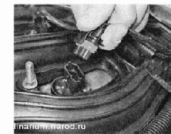
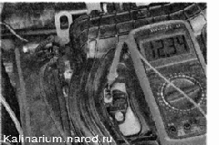
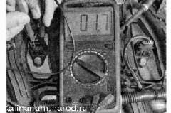
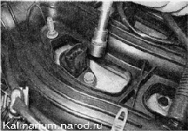
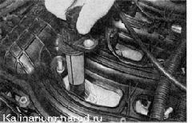

Катушки зажигания - проверка и заменаДля выполнения работы потребуется: мультиметр (в режиме омметра и вольтметра). Проверка и снятие 1. Подготавливаем автомобиль к выполнению работ. 2. Снимаем декоративную накладку двигателя. 3. Нажимаем на фиксатор колодки жгута проводов. Удерживая фиксатор в таком положении, отсоединяем колодку проводов от катушки зажигания первого цилиндра.  4. Включив зажигание, измеряем вольтметром напряжение на выводе 3 колодки жгута проводов (нумерация выводов нанесена на катушке зажигания). 
5. Аналогично проверяем поступление напряжения питания на катушки зажигания второго, третьего и четвертого цилиндров. Замечание Напряжение на выводе должно быть не меньше 12 В. Если напряжение не поступает на колодку или оно меньше 12 В, значит, разряжена аккумуляторная батарея, есть неисправность в цепи питания либо неисправен ЭБУ. По окончании измерения напряжения выключайте зажигание. 6. Омметром измеряем сопротивление между выводами катушки. 
Электрическое сопротивление между выводами 1-3 должно быть близким к нулю (около 1 Ом). Сопротивление между выводами 1-2 и 2-3 должно быть большим (стремиться к бесконечности). Неисправную катушку необходимо заменить. 7. Торцовым ключом на 10 мм отворачиваем болт крепления катушки зажигания к головке блока цилиндров. 
8. Вынимаем катушку зажигания из головки блока цилиндров. 
Установка Устанавливаем катушку зажигания в последовательности, обратной снятию. |